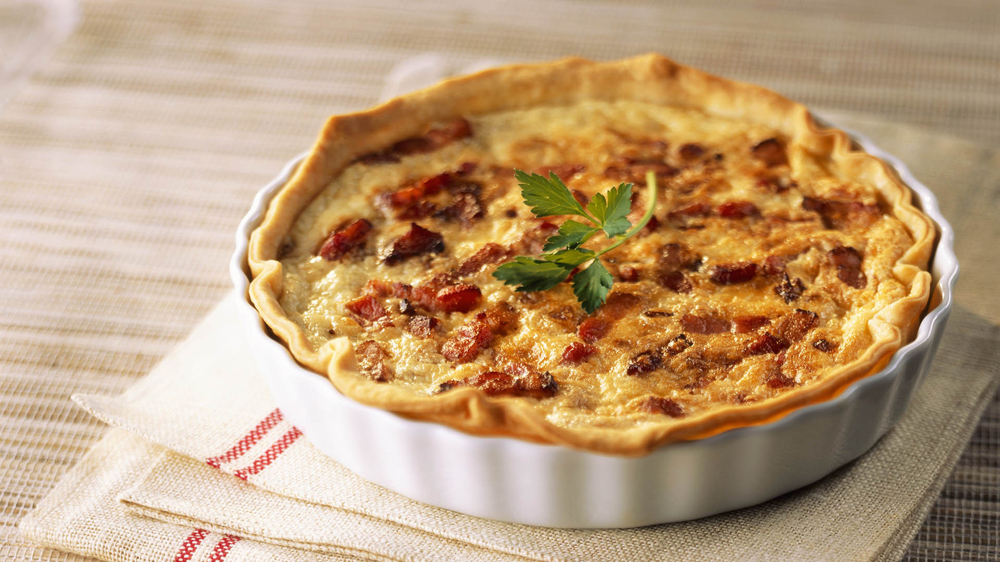

Quiche de bacon y puerros
Receta de quiche

Ingredientes
- Masa quebrada
- Huevos
- Nata
- Becon
- Puerros
- Aceite, sal y pimienta
- molde y garbanzos secos
Elaboracion (Pasos)
- Calentar el horno a 180º
- Ponemos en un molde la masa quebrada y encima de esta unos garbanzos para que no suba la masa. La metemos en el horno durante 10 min o hasta que se dore ligeramente
- Mientras el molde esta en el horno, vamos dorando los puerros, previamente troceados con un poco de aceite
- Cuando el puerro este pochado, reservamos y en el mismo aceite doramos el bacon.
- En un bol grande batimos los huevos y mezclamos con la nata. Añadimos el puerro y el bacon reservados, rectificamos de sal y pimienta
- Tras quitar los garbanzos de la masa quebrada, añadimos la mezcla y volvemos a meterlo en el horno hasta que la masa este cuajada.
- Sacar del horno, servir y degustar tanto en frio como en caliente.
INICIO